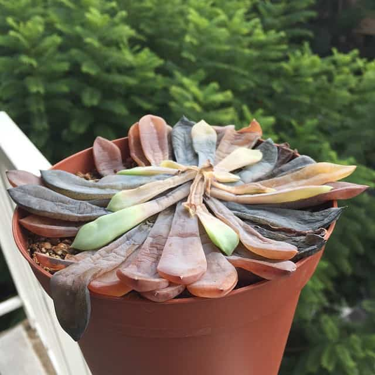

Problemas con las Suculentas
Un problema muy común son las hojas amarillas, arrugadas o caidas, tambien las raices blandas por producto de exceso de riego. Una solución es asegurarse de que las macetas tengan un buen drenaje y que el sustrato no retenga el exceso de agua. Reduce el riego y transplanta la suculenta a un sustrato más adecuado si es necesario.
Otro problema son las hojas arrugadas o deshidratadas debido a la falta de agua. Aumentar la frecuencia de riego y asegurarse de que la suculenta reciba la cantidad adecuada de agua. También verificar la luz; la falta de luz puede hacer que las suculentas se vean arrugadas.
Problemas con los Helechos
Comúnmente las hojas se vuelven amarillas debido a la deficiencia de nutrientes. Una solución es ajustar el riego y fertilizar los helechos con un fertilizante equilibrado.
Las flores se marchitan o caen, debido al riego excesivo. Se debe asegurar que la humedad este adecuada. Rociar las hojas regularmente y mantener un ambiente humedo para que pueda crecer correctamente.

Problemas con las orquídeas
Comúnmente se vuelven amarillas por el exceso de agua, una forma de corregirlo es ajustar el riego y asegurarse de que la orquídea esté en una maceta con buen drenaje.
Asi como nosotros, las plantas tienen su período de descanso para lograr florecer nuevamente. Se debe proporcionar un ambiente más fresco durante unas semanas y reduce el riego antes de reiniciar el cuidado normal.